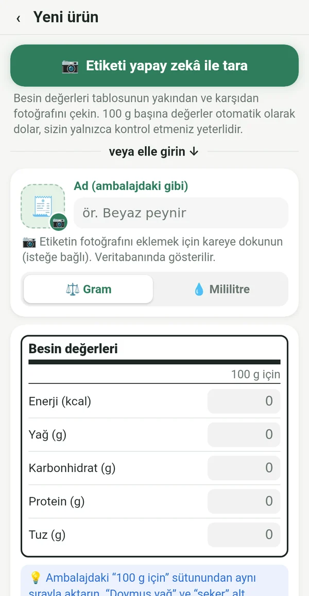
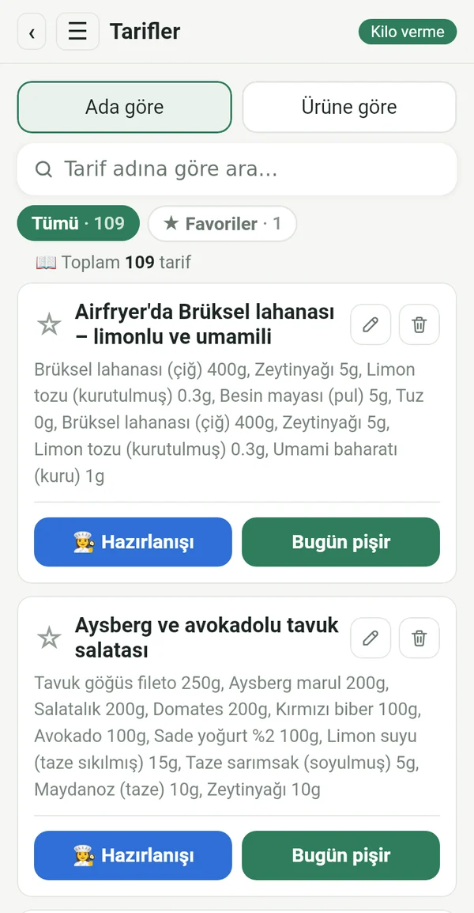
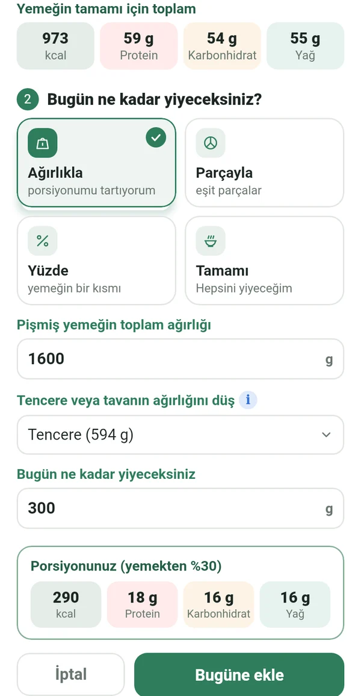
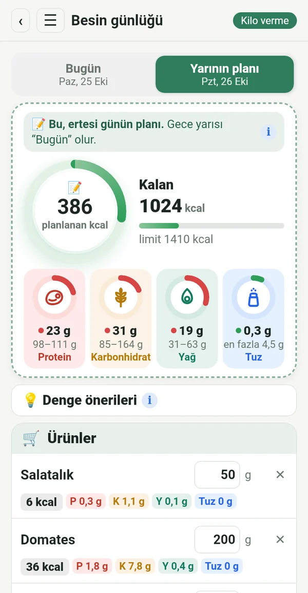
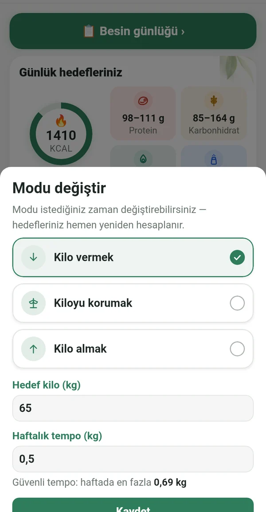
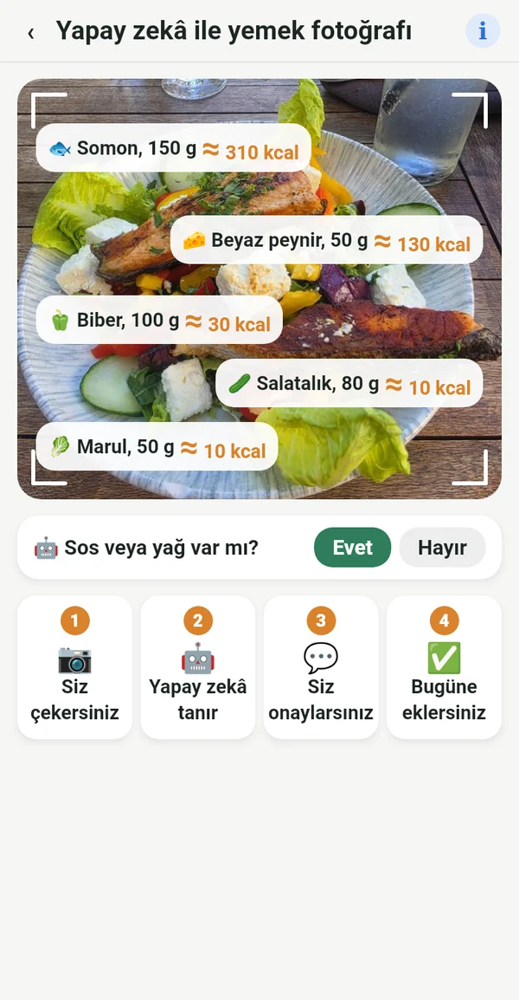

İhtiyacınız olan her şey, fazlası değil

Etiketten, başkalarının veri tabanından değil
100 g değerlerini ambalajdan yazın ya da sadece etiketin fotoğrafını çekin. Rakamlar gerçekten yediğinizle örtüşür.
📷 Etiketin yapay zekâ ile çekilen fotoğrafı alanları sizin yerinize doldurur
Dijital yemek kitabınız
Büyükannenizin defterindeki, raftaki yemek kitaplarındaki ve sevdiğiniz gruplardaki tarifler tek bir yerde. Bir kez girin, her zaman kullanın.

Tüm tencereden tam porsiyonunuz
Hazır yemeği tencereyle birlikte tartın. Macrolia tencereyi düşer ve tam olarak ne kadar yediğinizi hesaplar.

Planlayın, alışveriş yapın, yiyin
Yarın ne yiyeceğinizi bugünden girin. Yalnızca gerekeni alırsınız; gece yarısı plan sizin gününüz olur.

Kilo verme, koruma veya alma
Hedefe ulaşınca “Kiloyu korumak” moduna geçersiniz. Hayat değişirse modu değiştirmeniz yeterli. Günlük limit, Mifflin-St Jeor formülüne ve klinik önerilere göre, güvenli bir hızla hesaplanır.

Dışarıda da ne yediğinizi bilin
Tabağın fotoğrafını çekin, yapay zekâ içinde ne olduğunu tanısın. Değer yaklaşıktır ve ≈ ile işaretlenir. Yaklaşık değer, hiç yoktan iyidir.
Hareketten gelen kaloriler
Health Connect ile telefondan, saatten veya bir fitness uygulamasından. Limitinize ne kadar ekleneceğini siz seçersiniz.
Kilo, grafik, rapor
Kilo grafiği, yalnızca sizin göreceğiniz önce-sonra fotoğrafları ve PDF ile Excel rapor.
Denge önerileri
Protein veya yağ hedefin dışına çıktığında kısa ipuçları. Yardım eder, emir vermez.
Düzenini korumak isteyen her kadın için
Yo-yo diyetten gelmez. Bıraktığında gelir.
Bebekten sonra yeniden düzenine dönersin.
Yaş, vazgeçmek için bir sebep değil.
Restoranda bile ne sipariş edeceğini bilirsin.
Planı tam uygulayan, tam sonuç alır.
Verileriniz yalnızca size ait
Her şey telefonunuzda kalır. Kayıt yok, reklam ve takip yok. Yapay zekâ analizi için çekilen fotoğraf yalnızca hesaplama için gönderilir ve saklanmaz.
Abonelik
Aylık veya yıllık abonelik, ikisi de 7 gün ücretsiz. Google Play'den istediğiniz zaman iptal edebilirsiniz.
14 dilde, açık ve koyu temayla.
Sorular
Uygulama ne zaman çıkıyor?
Google Play'de yayına hazırlanıyoruz. Bize yazın, hazır olduğunda haber verelim.
iPhone sürümü var mı?
Şimdilik yalnızca Android için. iPhone sürümü daha sonra planlanıyor.
Neden barkod tarayıcı yok?
Barkod veri tabanlarını kullanıcılar doldurur ve sık sık hatalı ya da eskidir. Macrolia'da her değer etiketten gelir, bu yüzden rakamlar doğrudur.
Kaç yapay zekâ fotoğrafı çekebilirim?
Etiket ve yemekler için toplam ayda 100 fotoğrafa kadar.